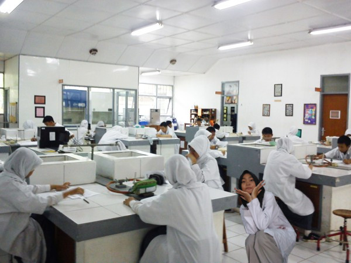

Halo. Nama saya Apriella Aulia Sholeha, iya Sholeha kan? Biasa dipanggil Auli, Aol, Aul, Ule, Ela, Sholeh, Leha, terserahlah manggil sayang juga boleh. Tempat tanggal lahir saya yaitu di Kota Bekasi tepatnya tanggal 19 April 2001. Saya adalah anak pertama dari 2 bersaudara. Dulu saya bersekolah di TK, SD, SMP, dan kini saya bersekolah di SMAKBO bukan SMA-KBO loh ya. Sekarang saya berdiri di bangku kelas 11, eh duduk. Saat ini saya diharuskan hidup mandiri sebab sekolah saya lumayan jauh dari rumah saya yang macet itu dan mengharuskan saya untuk nge-kost di kota Bogor yang (isi sendiri). Kosan saya itu berwarna hijau yang terletak di Gang Toib bukan Toyib. Tetapi saya tidak sendirian disini, saya bersama kakak-kakak,adik-adik, dan teman-teman satu sekolah saya yang sama-sama sedang memperjuangkan kerasnya hidup demi masa depan. Yak sekian perkenalan singkat tentang diriku, ku harap kita semakin dekat nantinya ya. Cinta-cinta saya, eh cita-cita saya menjadi seorang dokter spesialis anak, tetapi jadi analis juga kece.
